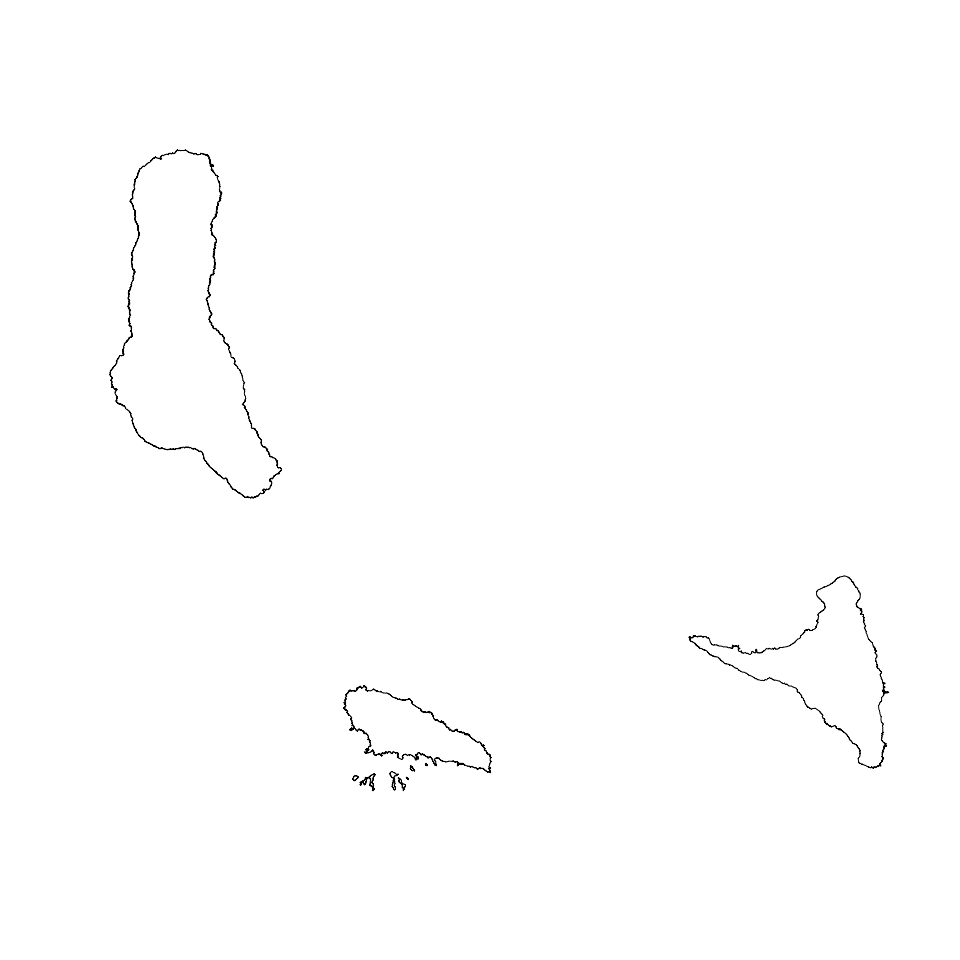
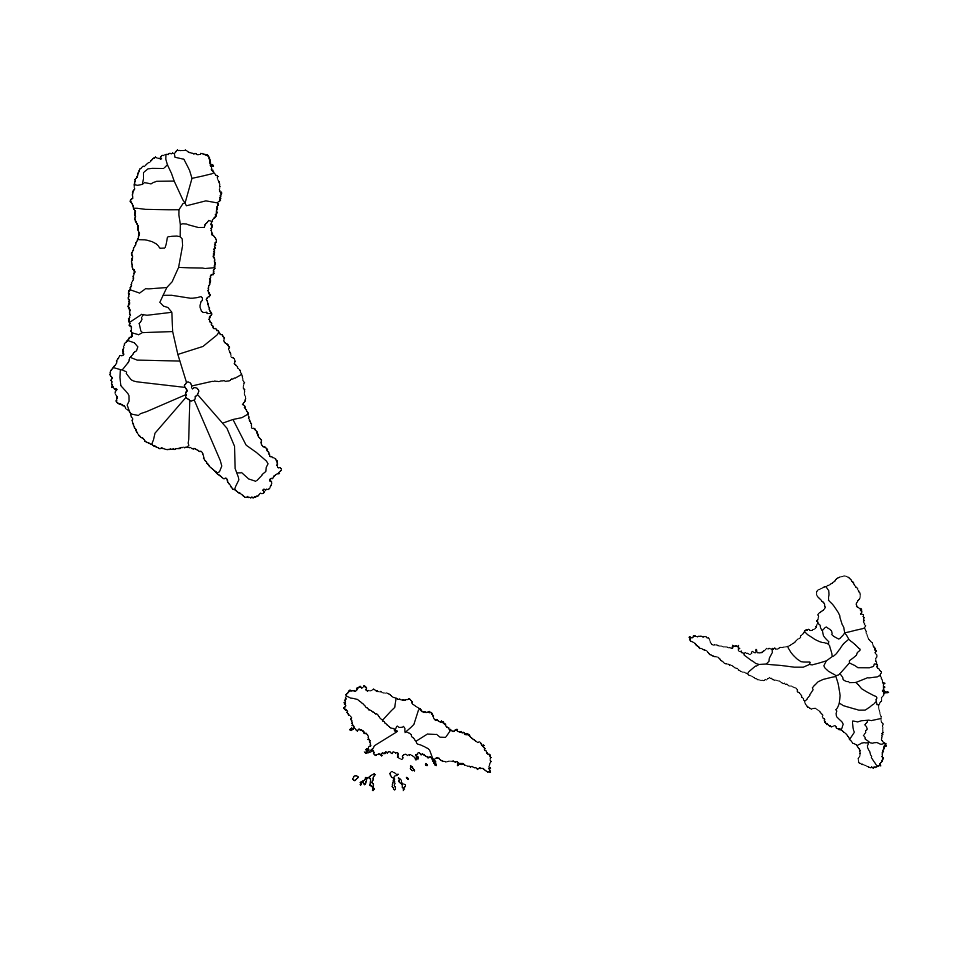

Designing surveys require relevant datasets to be used as basis for sample size calculations, sampling design, survey planning/logistics and survey implementation. These include datasets on population, lists of sampling clusters, map datasets for spatial sampling, and previous survey datasets that can be used for estimating indicator variance and design effects. This package contains relevant datasets for use in designing surveys in the Comoros Union.
Installation
The comoros package is not yet released on CRAN. The development version of the package can be installed from GitHub with:
if(!require(remotes)) install.packages("remotes") remotes::install_github("spatialworks/comoros")
Usage
When installing comoros, geospatial packages on which comoros depends on are also installed. To use comoros package, it will be important to load these package dependencies that have been installed. This can be done by:
Country borders
The Comoros country borders SpatialPolygonsDataFrame is accessed via the country dataset.
comoros::country #> class : SpatialPolygonsDataFrame #> features : 1 #> extent : 43.22856, 44.54067, -12.42278, -11.36528 (xmin, xmax, ymin, ymax) #> crs : +proj=longlat +datum=WGS84 +no_defs +ellps=WGS84 +towgs84=0,0,0 #> variables : 10 #> names : Shape_Leng, Shape_Area, ADM0_EN, ADM0_PCODE, ADM0_REF, ADM0ALT1EN, ADM0ALT2EN, date, validOn, validTo #> value : 4.80449064527, 0.137199933487, Comoros (the), KM, NA, NA, NA, 2018/12/28, 2019/12/05, NA
The country borders of the Comoros can be plotted by:
sp::plot(comoros::country)

Prefecture borders
The Comoros prefecture borders SpatialPolygonsDataFrame is accessed via the prefecture dataset.
comoros::prefecture #> class : SpatialPolygonsDataFrame #> features : 17 #> extent : 43.22856, 44.54067, -12.42278, -11.36528 (xmin, xmax, ymin, ymax) #> crs : +proj=longlat +datum=WGS84 +no_defs +ellps=WGS84 +towgs84=0,0,0 #> variables : 14 #> names : Shape_Leng, Shape_Area, ADM2_EN, ADM2_PCODE, ADM2_REF, ADM2ALT1EN, ADM2ALT2EN, ADM1_EN, ADM1_PCODE, ADM0_EN, ADM0_PCODE, date, validOn, validTo #> min values : 0.0966248392692, 0.0004527146025, Djando, KM11, Mitsamiouli-Mboude, NA, NA, Anjouan (Ndzouani), KM1, Comoros (the), KM, 2018/12/28, 2019/12/05, NA #> max values : 1.00539489321, 0.014594533592, Sima, KM33, Mremani, NA, NA, Moheli (Mwali), KM3, Comoros (the), KM, 2018/12/28, 2019/12/05, NA
The prefecture borders of the Comoros can be plotted by:
sp::plot(comoros::prefecture)
Commune borders
The Comoros commune borders SpatialPolygonsDataFrame is accessed via the commune dataset.
comoros::commune #> class : SpatialPolygonsDataFrame #> features : 55 #> extent : 43.22856, 44.54067, -12.42278, -11.36528 (xmin, xmax, ymin, ymax) #> crs : +proj=longlat +datum=WGS84 +no_defs +ellps=WGS84 +towgs84=0,0,0 #> variables : 16 #> names : Shape_Leng, Shape_Area, ADM3_EN, ADM3_PCODE, ADM3_REF, ADM3ALT1EN, ADM3ALT2EN, ADM2_EN, ADM2_PCODE, ADM1_EN, ADM1_PCODE, ADM0_EN, ADM0_PCODE, date, validOn, ... #> min values : 0.0966248392692, 0.000442750529473, Adda, KM111, Cembenoi Lac Sale, NA, NA, Djando, KM11, Anjouan (Ndzouani), KM1, Comoros (the), KM, 2018/12/28, 2019/12/05, ... #> max values : 0.758187096198, 0.00602115613753, Vouani, KM332, Ngandzale, NA, NA, Sima, KM33, Moheli (Mwali), KM3, Comoros (the), KM, 2018/12/28, 2019/12/05, ...
The commune borders of the Comoros can be plotted by:
sp::plot(comoros::commune)

Populated places
Populated places in the Comoros can be accessed via the ppl dataset which is in a SpatialPointsDataFrame format.
comoros::ppl #> class : SpatialPointsDataFrame #> features : 144 #> extent : 43.23215, 44.52885, -12.37829, -11.37155 (xmin, xmax, ymin, ymax) #> crs : +proj=longlat +datum=WGS84 +no_defs +ellps=WGS84 +towgs84=0,0,0 #> variables : 6 #> names : osm_id, is_in, source, place, population, name #> min values : 339324562, Anjouan, #opendri-comoros, city, 1000 a 3000, Akibani أكيباني #> max values : 7228442367, Moya;Sima;Anjouan, US NGA Pub. 112. 2010-11-10., village, 8000, واناني Wanani
The populated places dataset can be laid over the country borders as follows:
sp::plot(comoros::commune, lwd = 0.5, border = "gray50") sp::plot(comoros::prefecture, add = TRUE) sp::plot(comoros::country, lwd = 2, add = TRUE) sp::plot(comoros::ppl, cex = 0.3, pch = 20, col = "darkgreen", add = TRUE)